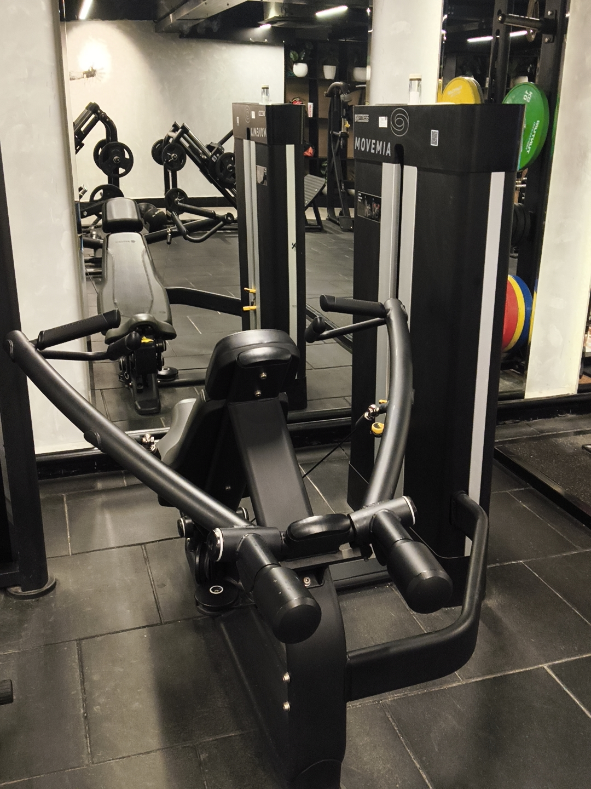

Shoulder Press Machine
Primary: Anterior Deltoid · Secondary: Lateral Delt, Triceps
How to perform
- 1Adjust seat so handles are at shoulder height. Sit upright.
- 2Grip handles with palms facing forward or neutral (whichever is available).
- 3Press upward until arms are nearly straight — don't fully lock elbows.
- 4Lower slowly back to the start. Maintain tension throughout.
Recommended
4 Sets × 10–12 Reps

Rear Delt Fly Machine
Primary: Posterior Deltoid · Secondary: Rhomboids, Traps
How to perform
- 1Sit facing the pad. Adjust arms so they're horizontal at start.
- 2Grip handles with a neutral or overhand grip.
- 3Drive arms back in a wide arc — squeeze rear delts at the end.
- 4Return slowly. Don't let the weight slam back at the front.
Recommended
3 Sets × 12–15 Reps

Cable Face Pull
Primary: Rear Delts, Rotator Cuff · Secondary: Traps
How to perform
- 1Set pulley to upper chest height. Attach a rope. Grab with both hands.
- 2Step back until there's tension. Stand tall with core engaged.
- 3Pull the rope toward your face, separating hands at the end. External rotate.
- 4Pause, then return. Great for shoulder health and posture.
Recommended
3 Sets × 15–20 Reps